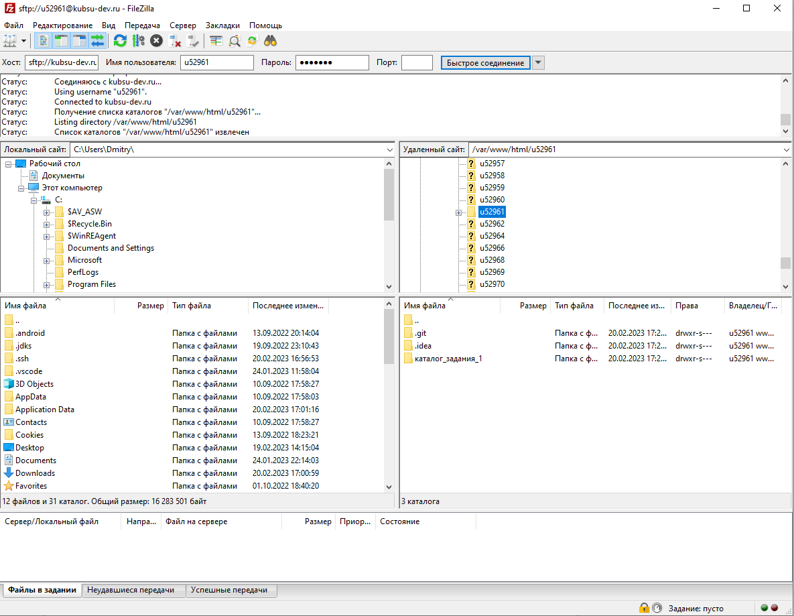

Устанавливаем ssh соединение с удалённым сервером. Потом будет запрошен логин и пароль.

При вызове команды ping мы получаем время, за которое доходят данные от нашего ПК до сервера по данному ip-адрессу(или не получаем, если подключение не удалось установить). Для kubsu.ru и kubsu-dev.ru
Из A-записей можно узнать адрес на котором находится сайт(связывает домен и ip) Из MX-записей можно узнать адресс почтового сервера и его приоритет, через который будут проходить данные для нашего сайта.


С помощью этой команды можно узнать кто является владельцем данного домена, когда он был зарегистрирован, до какого числа проплачен, кто является регистратором.(для kubsu.ru и kubsu-dev.ru)

Дальше идут скриншоты того, как я попал в папку на сервере с моим логином и клонировал в неё репозиторий из гитхаба.

cd - change directory ls - позволяет пользователям выводить список файлов и каталогов из интерфейса командной строки.

Перемещаемся в папку с логином и клонируем туда репозиторий

всё что получилось после клонирования репозитория в папку на сервере

добавление новых файлов на сервер из репозитория с помощью git pull
Скачивание файлов на локальный пк с помощью FileZilla(ftp) клиента
